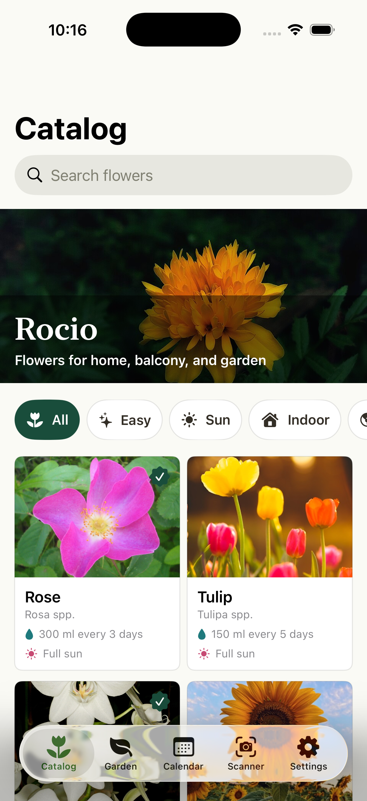
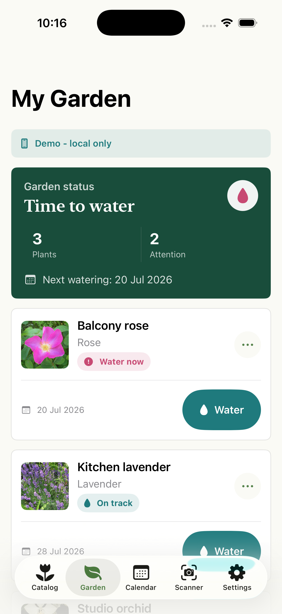
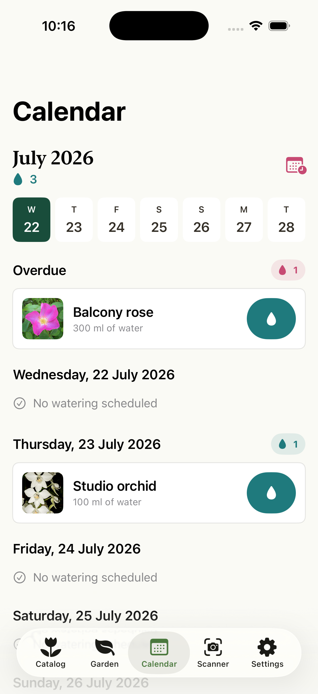
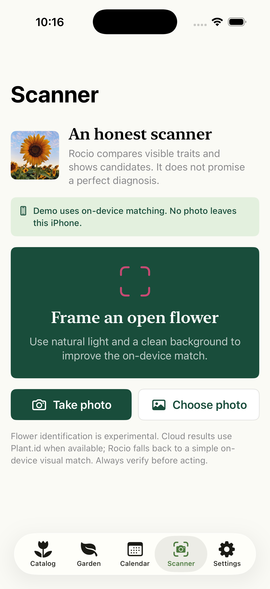
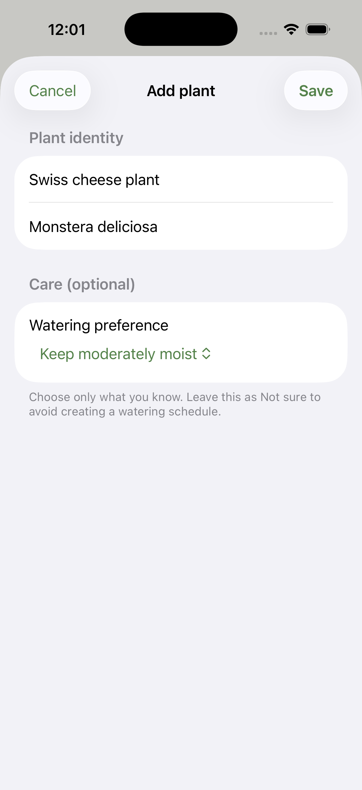
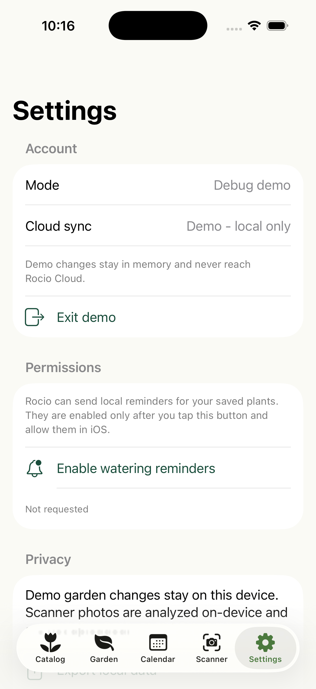

Scan or enter a plant, save the specimen, choose a watering preference when you decide, and confirm the first watering.
Web catalog
Real photography
Data stays in this browser
Try the web preview
The clip and interactive experience belong to the local-data web demo. The current iOS app has been verified in Simulator and launches with development signing on a physical iPhone, but no public TestFlight or App Store binary exists yet.
- Local-data demo Open Rocío with sample data. The garden and history remain in this browser; the demo does not create an account or sync with Supabase.
- Native app The iOS version keeps versioned primary and backup snapshots, synchronizes per account, and lets you export or delete your data.
- Experimental scanner The demo compares locally. On iOS, you can keep the photo on the phone or authorize a one-time upload; both paths expose uncertainty.
Running native build · no mockups
Rocío on iPhone
Six privacy-safe screens captured directly from the Rocío Debug build on an iPhone 17 simulator with iOS 26.3.1. The catalog, garden, calendar, scanner, and settings screens were captured on July 22, 2026; the manual Swiss cheese plant screen was captured on July 23 from the current arbitrary-plant branch. They are real development evidence, not mockups or final App Store art. The submission set will be captured again from the exact Release archive.






Made for the home garden
Rocío keeps 15 bundled editorial flower guides without making them a runtime limit. The native feature candidate can save arbitrary Plant.id results or manual entries with durable identity, optional user-confirmed care, offline persistence, and account synchronization.
Versioned primary and backup snapshots retain plants offline, surface recovery state, and retry synchronization when the connection returns.
The scanner offers local analysis and requests fresh consent before transferring a reduced image. Provider results keep their own identity.

Practical care, without pressure
Rocío competes on trust: familiar flowers, native English and Spanish support, secure recovery, and guidance that is easy to consult.
- English + Spanish The interface follows the iPhone language while preserving flower context relevant to Mexico and Latin America.
- Secure recovery The PKCE flow stores the verifier in Keychain and keeps bearer tokens out of the URL.
- Native where it matters App Intents, local notifications, camera, photo picker, and a real SwiftUI experience.
Version 1.0 status
The arbitrary-plant code is locally verified as a feature candidate. Publishing still requires reviewed backend deployment, authenticated canaries, device and two-session testing, distribution signing, and external configuration that a web demo cannot replace.
Verified in the repository
170/170 iOS tests, 28/28 Edge runtime tests, 50/50 static cloud controls, the four-migration PostgreSQL 16 harness, the 12/12 release gate, the 12/12 strict classifier, and the 20/20 unsigned App Store audit pass on the current feature candidate. The unsigned Release build also compiles successfully.
Before TestFlight
The reviewed deletion-preserving, arbitrary-plant, and idempotent-scan migrations, matching Edge deployment, authenticated production canaries, remote recovery configuration, real-device and two-session smoke tests, paid Apple Developer membership, and distribution signing remain outstanding.
Availability: The deletion-preserving, arbitrary-plant, and idempotent-scan migrations and matching Edge update are not deployed, and Rocío 1.0 is not yet offered through TestFlight or the App Store. This page does not install the native app; the 15-guide web demo is a separate surface.